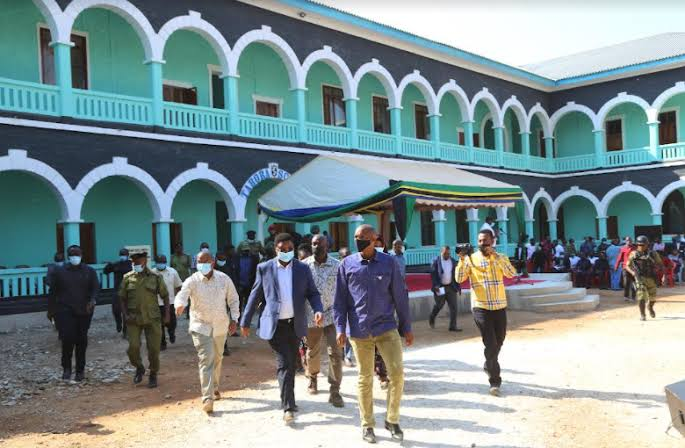
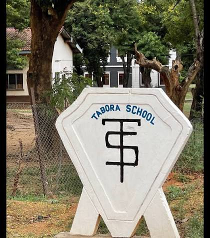
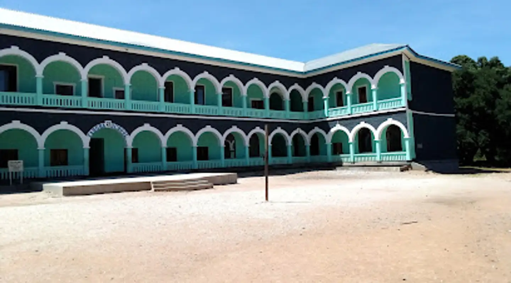

School Gallery
View photos and memorable moments from Tabora Boys Secondary School, including school facilities, students and activities.
View Gallery
News & Events
Stay informed about important school news, events, academic activities and other developments.
View News
School Activities
Discover academic, sports, leadership and other co-curricular activities taking place at the school.
Explore Activities
Videos
Watch school events, activities and other visual content related to Tabora Boys Secondary School.
Watch Videos